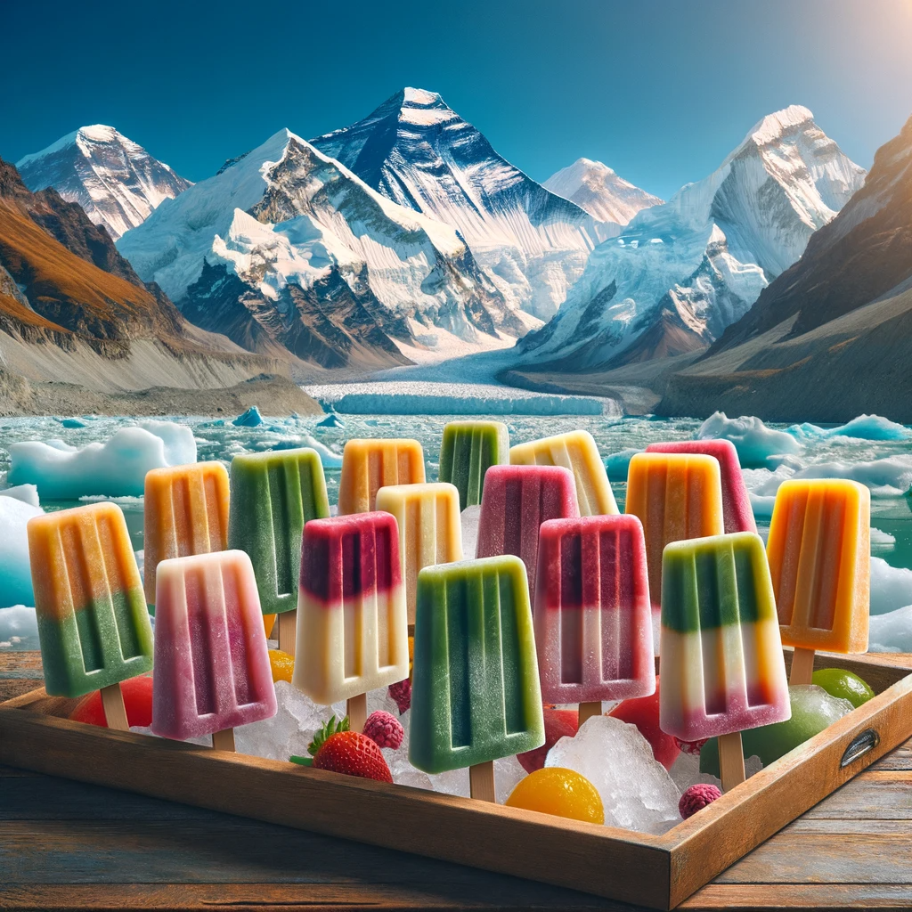

About Us
Welcome to Popsicles, nestled in the breathtaking heights of Mt. Everest. Our mission is to bring the purity and freshness of the world's highest peaks directly to you through our unique ice popsicles. We are committed to providing authentic, natural flavors, harnessing the pristine ice of the roof of the world. Join us on our journey to not just serve ice popsicles, but to offer a taste of Mt. Everest in every bite.